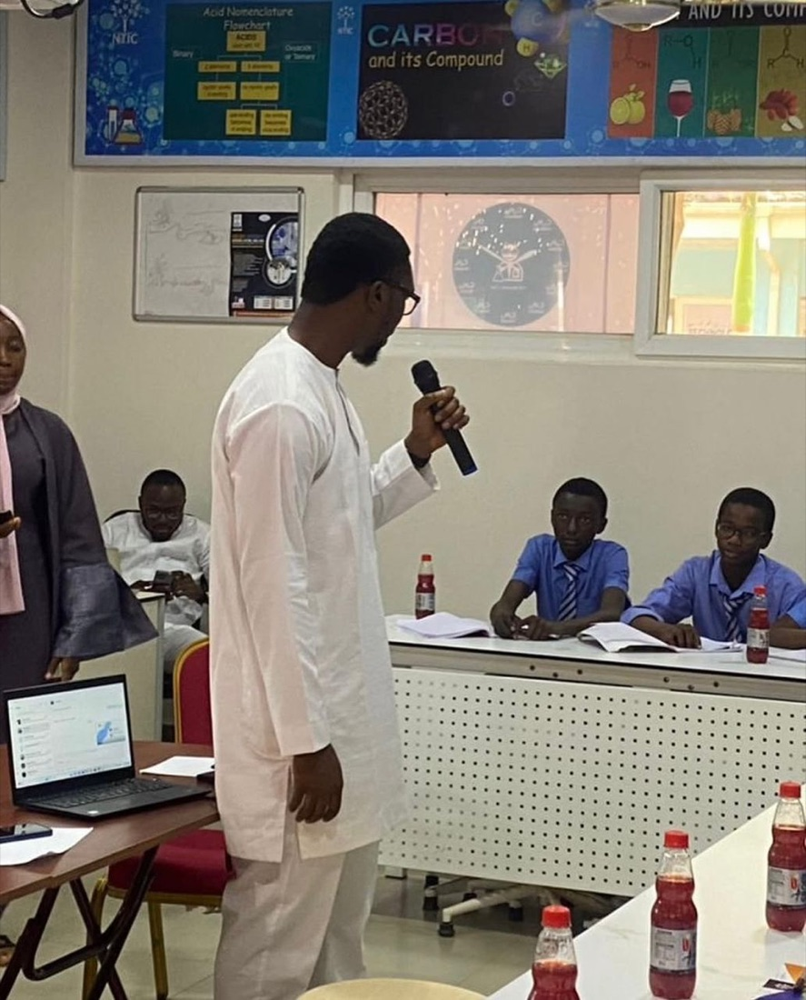

Love Through Technology
It's in our name. We lead with care, not judgment, and use technology as a tool to show young people they are valued.
Principle 01
Teqia Grassroot Foundation works to end cybercrime, drug abuse, cultism, prostitution and other social vices among young people in underserved communities by raising awareness of their dangers and giving them free, practical tech skills to thrive in a rapidly changing digital world.
In underserved communities, many bright young people grow up without a clear path to a decent livelihood. That gap leaves them exposed to cybercrime, drug abuse, cultism, prostitution and other vices that can cut a promising future short.
Teqia meets them where they are. We go into schools and communities to talk honestly about the dangers of these vices, then back that message up with free training in in-demand tech skills and guidance from mentors, so young people have a real, legitimate way to build their future.
“Teqia, which means spreading love through technology, is a grassroot foundation focused on eradicating cybercrime, drug abuse and other social vices by equipping youths and teenagers with the necessary skills to thrive in the rapidly changing digital world.”
Teqia Grassroot Foundation Constitution, Article 3

Sensitization session with secondary school students
These values shape how we reach young people, what we teach, and how we use every naira entrusted to us.
It's in our name. We lead with care, not judgment, and use technology as a tool to show young people they are valued.
We speak openly about the real cost of cybercrime, drug abuse, cultism and prostitution, before young people are drawn in.
Awareness alone isn't enough. Free, practical tech training gives young people a legitimate way to earn and grow.
Lifting one young person lifts a family and a neighbourhood. We work at the grassroots, in the communities that need it most.
A simple, end-to-end approach that takes young people from awareness to real skills and opportunities.
We visit schools and underserved communities to connect directly with young people.
Schools & CommunitiesHonest talks on the dangers of cybercrime, drug abuse, cultism and prostitution.
Awareness TalksFree, practical training in DevOps, Cybersecurity, Cloud, Software, Business Analysis and AI.
Free of ChargeGuidance and encouragement from volunteers and professionals who've walked the path.
Volunteer MentorsReal projects, freelancing and career paths that keep young people on the right track.
Real-World SkillsTeqia Grassroot Foundation is a not-for-profit, non-political organisation incorporated with the Corporate Affairs Commission of Nigeria on 7 November 2024. These are the people who lead our work.
Chairman
Communications & Marketing Manager
Operations Manager
Fundraising Manager
Program Manager
Project Development Manager
Financial Secretary
Whether you donate, share your expertise as a mentor, or give your time as a volunteer, you help keep young people safe and give them the skills for a better life.